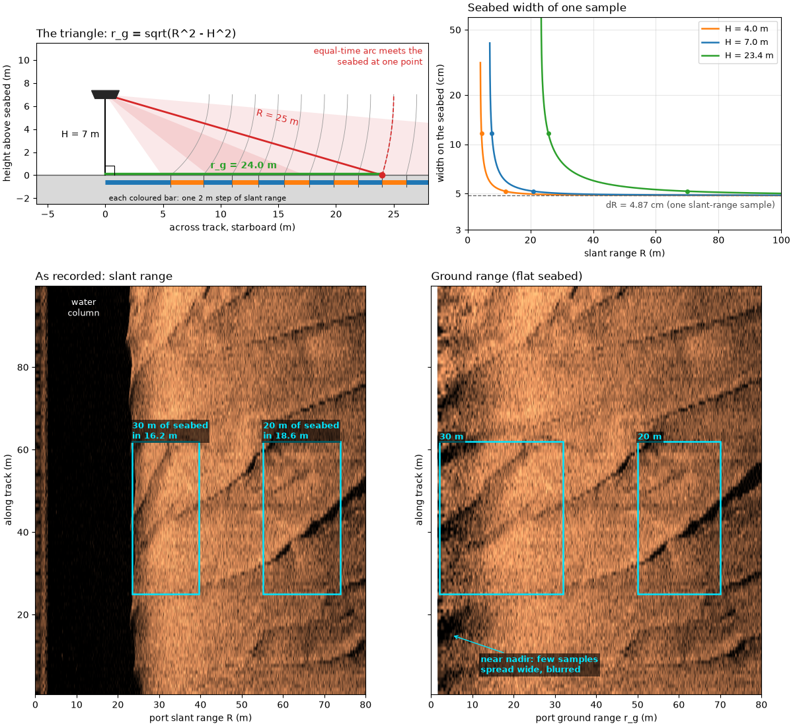
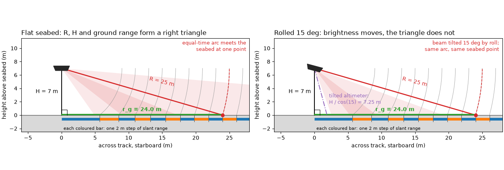
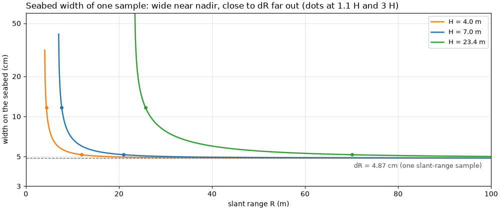
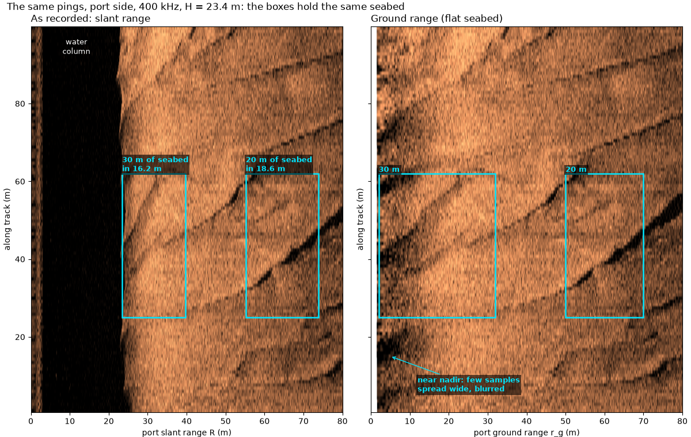
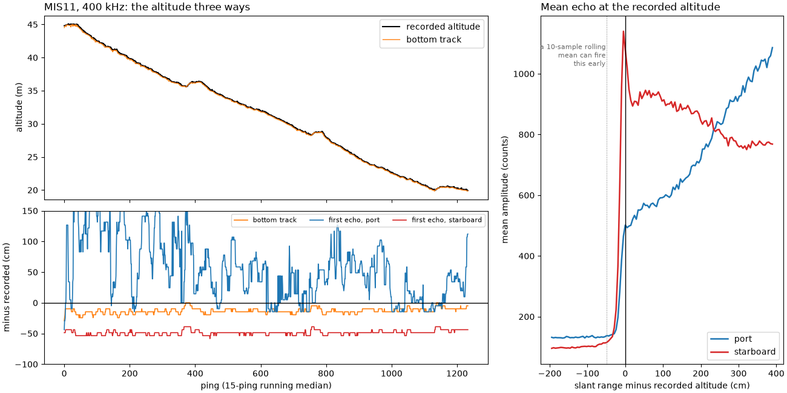
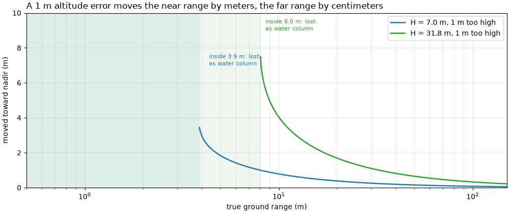
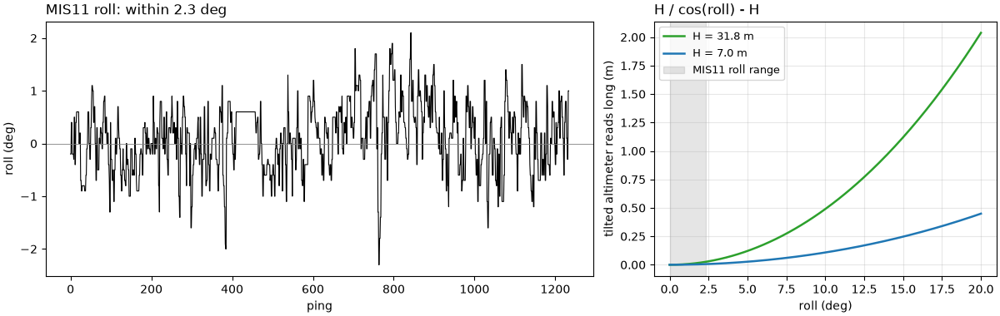
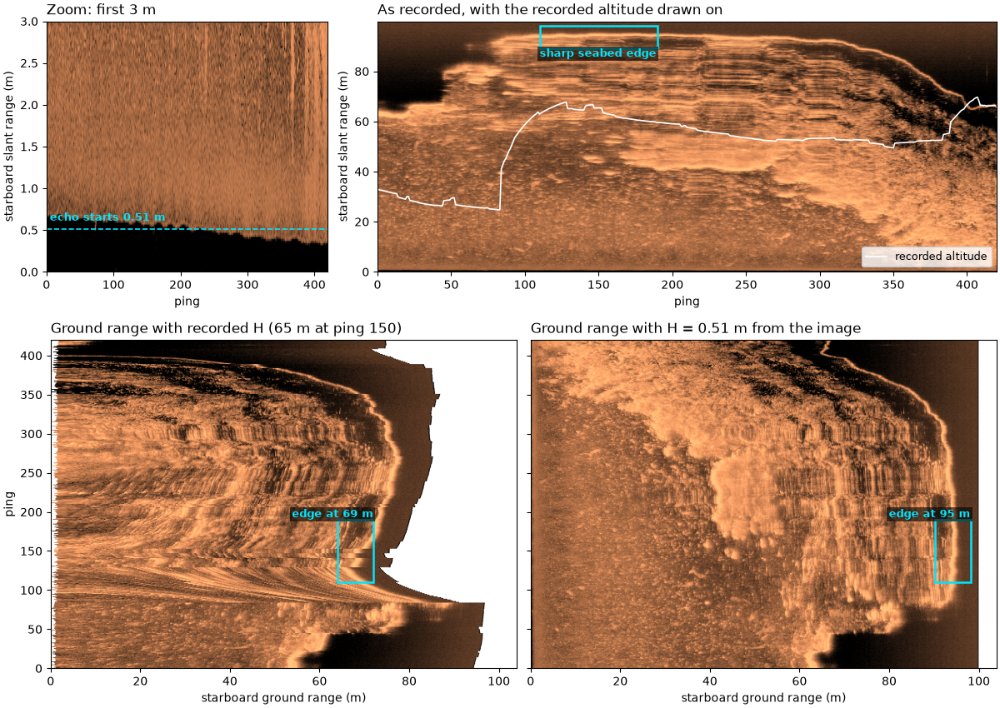

Note
Go to the end to download the full example code.
From slant range to ground range#

The sonar measures time, not distance across the seabed. An echo that
arrives t seconds after the pulse left came from slant range
with c the speed of sound (about 1500 m/s). With the towfish at
altitude H above a flat seabed, the echo at R comes from the one
seabed point where the circle of radius R around the towfish meets
the floor. H, R and the distance across the seabed form a right
triangle, so the ground range of that point is
Close to nadir (the point straight below the towfish) r_g changes
fast with R: equal steps of slant range cover unequal widths of
seabed. A sample dR long in slant range is
wide on the seabed, many times dR just past the altitude and close
to dR far out. A slant-range image therefore squashes the seabed
near nadir; converting to ground range spreads it back out.
Roll (the towfish tilting about its long axis) tilts the beam pattern,
which changes how bright each part of the swath is, but not the
triangle: on a flat seabed the echo at time t still comes from
distance R. Roll matters through H. An altimeter fixed to the
towfish and tilted with it reads the slant distance along its tilted
axis,
for roll phi: 6 % long at 20 degrees. An altitude taken from the
first seabed echo instead depends on where the beam’s inner edge points.
This page draws the triangle and the pixel width, shows the same pings in slant range and ground range, measures the altitude three ways on one public line, works out what an altitude error does to ground range, and shows a line whose recorded altitude is wrong.
Data: JNCC mid-Irish Sea (Open Government Licence v3.0) and USGS Grand Bay (U.S. public domain); see Example data.
Usage: python examples/theory/plot_slant_to_ground_range.py [output_dir]
# 2026 rshomberg@uri.edu
import sys
from pathlib import Path
import matplotlib.pyplot as plt
import numpy as np
from matplotlib.patches import Polygon, Rectangle, Wedge
from sidescanpy import datasets
from sidescanpy.io import read_and_convert
from sidescanpy.log import configure_logging
from sidescanpy.processing import (
along_track_distance_m,
altitude_from_bottom_track,
compute_geometric_ranges,
detect_first_bottom_return,
smooth_navigation,
)
out = Path(sys.argv[1]) if len(sys.argv) > 1 else Path(".")
out.mkdir(parents=True, exist_ok=True)
configure_logging("ERROR")
MARK = "#00e5ff" # label colour, chosen to stand out on the copper images
PORT, STARBOARD = 0, 1
def mark(ax, x0, x1, y0, y1, text, ha="left", below=False, colour=MARK):
"""Box a feature and label it above (or below) the box."""
ax.add_patch(Rectangle((x0, y0), x1 - x0, y1 - y0, fill=False, ec=colour, lw=1.8))
ax.text(x0 if ha == "left" else x1, y0 if below else y1, text, color=colour, fontsize=9, fontweight="bold",
ha=ha, va="top" if below else "bottom", clip_on=True,
bbox=dict(fc="black", alpha=0.6, ec="none", pad=1.5))
def level_db(values):
"""Recorded amplitude in dB (``20 log10``), no gain added."""
return 20 * np.log10(np.abs(values) + 1.0)
def to_ground(image, ground, grid):
"""Resample each ping (row) of ``image`` from its ground ranges onto ``grid``."""
resampled = np.full((image.shape[0], grid.size), np.nan)
for i, (row, g) in enumerate(zip(image, ground)):
ok = np.isfinite(g)
if ok.sum() > 2:
resampled[i] = np.interp(grid, g[ok], row[ok], left=np.nan, right=np.nan)
return resampled
The triangle#
Left: a cross-section across the track on the starboard side, to
scale, for the first worked example, H = 7 m and R = 25 m. The
dashed arc is every point 25 m from the towfish; it meets the flat
seabed at one point, 24 m out. The grey arcs are equal 2 m steps of
slant range, and the coloured bars under the seabed show the width of
seabed each step covers: 5.66 m for the first step past the altitude,
2.83 m for the next, close to 2 m by the last. Right: the same towfish
rolled 15 degrees.
The beam pattern (shaded fan) tilts, so a different part of the swath
gets the most sound, but the arc and the point it meets are unchanged.
An altimeter tilted with the towfish now measures the long side,
H / cos(15) = 7.25 m.
for h, r in ((7.0, 25.0), (4.0, 12.0)):
print(f"H = {h:.0f} m, R = {r:.0f} m: r_g = sqrt({r:.0f}^2 - {h:.0f}^2) = {np.sqrt(r**2 - h**2):.2f} m")
steps = np.sqrt(np.arange(7.0, 36.0, 2.0) ** 2 - 49.0)
print("2 m slant-range steps from H = 7 m cover " + ", ".join(f"{w:.2f}" for w in np.diff(steps)) + " m of seabed")
for roll in (2.0, 5.0, 10.0, 15.0, 20.0):
print(f"altimeter tilted {roll:.0f} deg reads H / cos = {100 * (1 / np.cos(np.radians(roll)) - 1):.1f} % long")
def draw_triangle(ax, altitude=7.0, slant=25.0, roll_deg=0.0, step=2.0, width=28.0):
"""Towfish, seabed, the H-R-r_g triangle, equal slant-range steps and a (rolled) beam."""
fish = np.array([0.0, altitude])
ground = np.sqrt(slant**2 - altitude**2)
# Beam pattern: an illustrative fan centred 30 deg below horizontal, tilted by roll.
centre = -30.0 - roll_deg
ax.add_patch(Wedge(fish, 1.5 * width, centre - 25, centre + 25, color="C3", alpha=0.10, lw=0))
ax.add_patch(Wedge(fish, 1.5 * width, centre - 8, centre + 8, color="C3", alpha=0.12, lw=0))
ax.axhspan(-2.5, 0, color="0.85")
ax.axhline(0, color="0.35", lw=1)
# Equal slant-range steps and where each meets the seabed
radii = np.arange(altitude + step, width + altitude, step)
for k, rad in enumerate(radii):
a = np.linspace(-np.arcsin(min(altitude / rad, 1.0)), 0.0, 60)
ax.plot(rad * np.cos(a), altitude + rad * np.sin(a), color="0.6", lw=0.6)
x = np.sqrt(rad**2 - altitude**2)
x_prev = np.sqrt(max((rad - step) ** 2 - altitude**2, 0.0))
ax.plot([x_prev, x], [-0.6, -0.6], color="C0" if k % 2 == 0 else "C1", lw=5, solid_capstyle="butt")
ax.plot([x, x], [0, -1.0], color="0.3", lw=0.8)
ax.text(0.3, -2.2, f"each coloured bar: one {step:.0f} m step of slant range", fontsize=8)
# The triangle
ax.plot([0, 0], [altitude, 0], color="k", lw=1.5)
ax.plot([0, ground], [altitude, 0], color="C3", lw=2)
ax.plot([0, ground], [0.12, 0.12], color="C2", lw=2.5)
ax.plot([0, 0.8, 0.8], [0.8, 0.8, 0], color="k", lw=0.8)
a = np.linspace(-np.arcsin(altitude / slant), 0.0, 80)
ax.plot(slant * np.cos(a), altitude + slant * np.sin(a), "--", color="C3", lw=1.2)
ax.plot(ground, 0, "o", color="C3", ms=6, zorder=5)
ax.text(-0.5, altitude / 2, f"H = {altitude:.0f} m", ha="right", va="center", fontsize=10)
ax.text(ground / 2 + 1, altitude / 2 + 0.8, f"R = {slant:.0f} m", color="C3", fontsize=10, rotation=-14)
ax.text(ground / 2, 0.6, f"r_g = {ground:.1f} m", color="C2", fontsize=10, ha="center", fontweight="bold")
# Towfish, tilted by roll
body = np.array([[-1.2, 0.35], [1.2, 0.35], [0.9, -0.35], [-0.9, -0.35]])
rot = np.radians(-roll_deg)
body = body @ np.array([[np.cos(rot), np.sin(rot)], [-np.sin(rot), np.cos(rot)]]) + fish
ax.add_patch(Polygon(body, color="0.15", zorder=6))
if roll_deg:
tilt = np.radians(roll_deg)
reach = altitude / np.cos(tilt)
ax.plot([0, reach * np.sin(tilt)], [altitude, 0], color="C4", lw=1.5, ls="-.")
ax.text(reach * np.sin(tilt) + 0.3, 1.7,
f"tilted altimeter:\nH / cos({roll_deg:.0f}) = {reach:.2f} m", color="C4", fontsize=9)
ax.text(width - 0.5, altitude + 2.6, f"beam tilted {roll_deg:.0f} deg by roll;\nsame arc, same seabed point",
color="C3", fontsize=9, ha="right")
else:
ax.text(width - 0.5, altitude + 2.6, "equal-time arc meets the\nseabed at one point", color="C3",
fontsize=9, ha="right")
ax.set_xlim(-6, width)
ax.set_ylim(-2.5, altitude + 4.5)
ax.set_aspect("equal")
ax.set_xlabel("across track, starboard (m)")
ax.set_ylabel("height above seabed (m)")
fig, axes = plt.subplots(1, 2, figsize=(13, 4.4), constrained_layout=True)
draw_triangle(axes[0])
axes[0].set_title("Flat seabed: R, H and ground range form a right triangle", loc="left")
draw_triangle(axes[1], roll_deg=15.0)
axes[1].set_title("Rolled 15 deg: brightness moves, the triangle does not", loc="left")
fig.savefig(out / "slant_to_ground_range_triangle.png", dpi=150)

H = 7 m, R = 25 m: r_g = sqrt(25^2 - 7^2) = 24.00 m
H = 4 m, R = 12 m: r_g = sqrt(12^2 - 4^2) = 11.31 m
2 m slant-range steps from H = 7 m cover 5.66, 2.83, 2.47, 2.31, 2.23, 2.17, 2.14, 2.11, 2.09, 2.08, 2.07, 2.06, 2.05, 2.04 m of seabed
altimeter tilted 2 deg reads H / cos = 0.1 % long
altimeter tilted 5 deg reads H / cos = 0.4 % long
altimeter tilted 10 deg reads H / cos = 1.5 % long
altimeter tilted 15 deg reads H / cos = 3.5 % long
altimeter tilted 20 deg reads H / cos = 6.4 % long
Pixel width against slant range#
One sample of the mid-Irish Sea recordings below spans
dR = c / (2 fs) of slant range, with fs the sample rate. The
figure plots how wide that sample is on the seabed,
dr_g = (R / r_g) dR, for the two altitudes of this page’s worked
examples and for the bedform line below. The ratio R / r_g depends
only on R / H, so the three curves have the same shape, stretched:
at 1.1 times the altitude one sample covers 2.4 dR of seabed, at
three times the altitude 1.06 dR.
bedforms = read_and_convert([datasets.fetch("jncc_mid_irish_sea_MIS15_2.xtf")], fmt="xtf")
print(f"mid-Irish Sea MIS15_2: frequencies {bedforms.frequencies}")
bed = bedforms.get_frequency("hz_400000").dataset.load()
fs = float(bed.attrs["sample_rate_hz"])
c = float(np.nanmedian(bed["sound_vel_ms"].values))
d_slant = c / (2 * fs)
print(f"sample rate {fs:.1f} Hz, c = {c:.0f} m/s: dR = {100 * d_slant:.2f} cm; "
f"{bed.sizes['sample']} samples = {bed.sizes['sample'] * d_slant:.1f} m of slant range")
WINDOW = (370.0, 470.0) # along-track metres shown in the image pair
bed = compute_geometric_ranges(bed)
along = along_track_distance_m(smooth_navigation(bed))
rows = np.flatnonzero((along >= WINDOW[0]) & (along <= WINDOW[1]))
h_bed = float(np.nanmedian(bed["altitude_m"].values[rows]))
print(f"bedform window: pings {rows[0]}-{rows[-1]}, {along[rows[1]] - along[rows[0]]:.2f} m apart, "
f"recorded altitude median {h_bed:.2f} m")
def pixel_width(slant, altitude, d_slant):
"""Seabed width of one slant-range sample, ``(R / r_g) dR``, NaN inside the water column."""
ground = np.sqrt(np.where(slant > altitude, slant**2 - altitude**2, np.nan))
return slant / ground * d_slant
def plot_pixel_width(ax):
for altitude, colour in ((4.0, "C1"), (7.0, "C0"), (h_bed, "C2")):
slant = np.linspace(altitude + d_slant, 100.0, 4000)
ax.plot(slant, 100 * pixel_width(slant, altitude, d_slant), color=colour, lw=1.8,
label=f"H = {altitude:.1f} m")
for times in (1.1, 3.0):
r = times * altitude
ax.plot(r, 100 * pixel_width(r, altitude, d_slant), "o", color=colour, ms=4)
ax.axhline(100 * d_slant, color="0.4", ls="--", lw=1)
ax.text(98, 100 * d_slant * 0.93, f"dR = {100 * d_slant:.2f} cm (one slant-range sample)", ha="right",
va="top", fontsize=9, color="0.3")
ax.set_yscale("log")
ax.set_ylim(3, 60)
ax.set_yticks([3, 5, 10, 20, 50], ["3", "5", "10", "20", "50"])
ax.minorticks_off()
ax.set_xlim(0, 100)
ax.set_xlabel("slant range R (m)")
ax.set_ylabel("width on the seabed (cm)")
ax.legend(loc="upper right", fontsize=9)
ax.grid(alpha=0.3, which="both")
for altitude in (4.0, 7.0, h_bed):
for times in (1.1, 3.0):
r = times * altitude
print(f"H = {altitude:.1f} m, R = {times} H = {r:.1f} m: one sample covers "
f"{100 * pixel_width(r, altitude, d_slant):.1f} cm of seabed "
f"({pixel_width(r, altitude, d_slant) / d_slant:.2f} x dR)")
fig, ax = plt.subplots(figsize=(10, 4.2), constrained_layout=True)
plot_pixel_width(ax)
ax.set_title("Seabed width of one sample: wide near nadir, close to dR far out (dots at 1.1 H and 3 H)",
loc="left")
fig.savefig(out / "slant_to_ground_range_pixel_width.png", dpi=150)

mid-Irish Sea MIS15_2: frequencies ['hz_100000', 'hz_400000']
sample rate 15398.5 Hz, c = 1500 m/s: dR = 4.87 cm; 4096 samples = 199.5 m of slant range
bedform window: pings 442-561, 0.80 m apart, recorded altitude median 23.35 m
H = 4.0 m, R = 1.1 H = 4.4 m: one sample covers 11.7 cm of seabed (2.40 x dR)
H = 4.0 m, R = 3.0 H = 12.0 m: one sample covers 5.2 cm of seabed (1.06 x dR)
H = 7.0 m, R = 1.1 H = 7.7 m: one sample covers 11.7 cm of seabed (2.40 x dR)
H = 7.0 m, R = 3.0 H = 21.0 m: one sample covers 5.2 cm of seabed (1.06 x dR)
H = 23.4 m, R = 1.1 H = 25.7 m: one sample covers 11.7 cm of seabed (2.40 x dR)
H = 23.4 m, R = 3.0 H = 70.1 m: one sample covers 5.2 cm of seabed (1.06 x dR)
Same pings, slant range and ground range#
The port side of 100 m of a line over sand waves, drawn twice with
along track and across track to the same scale in meters. Left, as
recorded: against slant range, with the water column (the dark band
out to the altitude) still in. Right: each sample moved to its ground
range with compute_geometric_ranges()
(the recorded altitude, flat seabed) and resampled onto an even
ground-range grid. The boxes hold the same patch of seabed in both,
placed with the median altitude of these pings. Near nadir, 30 m of
seabed is squashed into 16.2 m of slant range and the sand-wave crests
crossing it look steeper; farther out, 20 m of seabed takes 18.6 m and
barely changes. In ground range the first few meters are built from
few samples spread wide, so they look blurred: the conversion moves
samples to the right place, it cannot add detail.
The first mid-Irish Sea line (MIS11, used below for the altitude) has no sharp seabed features near nadir, so this pair uses MIS15, recorded by the same sonar.
n_show = int(round(85.0 / d_slant))
slant_axis = bed["slant_range_m"].values[rows[0], PORT, :n_show]
native = level_db(bed["backscatter_intensity"].values[rows, PORT, :n_show])
grid = np.arange(0.0, 80.0, d_slant)
ground_img = to_ground(native, bed["ground_range_m"].values[rows, PORT, :n_show], grid)
lo, hi = np.nanpercentile(native[:, slant_axis > h_bed + 1], [2, 99.5])
y0, y1 = along[rows[0]] - WINDOW[0], along[rows[-1]] - WINDOW[0]
NEAR_G, FAR_G = (2.0, 32.0), (50.0, 70.0) # ground-range spans of the two boxes (m)
BOX_Y = (25.0, 62.0) # along-track span of the boxes (m from window start)
def slant_of(ground):
return float(np.sqrt(ground**2 + h_bed**2))
for name, (g0, g1) in (("near", NEAR_G), ("far", FAR_G)):
s0, s1 = slant_of(g0), slant_of(g1)
print(f"{name} box: ground {g0:.0f}-{g1:.0f} m ({g1 - g0:.0f} m of seabed) = slant {s0:.2f}-{s1:.2f} m "
f"({s1 - s0:.2f} m, squashed to {100 * (s1 - s0) / (g1 - g0):.0f} %)")
def draw_pair(ax_s, ax_g, labels=True):
for ax, img, x_max, title in ((ax_s, native, slant_axis[-1], "As recorded: slant range"),
(ax_g, ground_img, grid[-1], "Ground range (flat seabed)")):
ax.imshow(img, cmap="copper", vmin=lo, vmax=hi, origin="lower", aspect="equal",
extent=[0, x_max, y0, y1], interpolation="antialiased")
ax.set_xlim(0, 80)
ax.set_title(title, loc="left")
ax.set_ylabel("along track (m)")
ax_s.set_xlabel("port slant range R (m)")
ax_g.set_xlabel("port ground range r_g (m)")
for g0, g1 in (NEAR_G, FAR_G):
s0, s1 = slant_of(g0), slant_of(g1)
mark(ax_s, s0, s1, *BOX_Y, f"{g1 - g0:.0f} m of seabed\nin {s1 - s0:.1f} m" if labels else "")
mark(ax_g, g0, g1, *BOX_Y, f"{g1 - g0:.0f} m" if labels else "")
if labels:
ax_s.text(h_bed / 2, y1 - 3, "water\ncolumn", color="w", ha="center", va="top", fontsize=9)
ax_g.annotate("near nadir: few samples\nspread wide, blurred", (5.0, 15.0), (12, 6), color=MARK,
fontsize=9, fontweight="bold", arrowprops=dict(arrowstyle="->", color=MARK),
bbox=dict(fc="black", alpha=0.6, ec="none", pad=1.5))
fig, (ax_s, ax_g) = plt.subplots(1, 2, figsize=(12, 7.6), sharey=True, constrained_layout=True)
draw_pair(ax_s, ax_g)
fig.suptitle(f"The same pings, port side, 400 kHz, H = {h_bed:.1f} m: the boxes hold the same seabed", x=0.01,
ha="left")
fig.savefig(out / "slant_to_ground_range_pair.png", dpi=150)

near box: ground 2-32 m (30 m of seabed) = slant 23.44-39.62 m (16.18 m, squashed to 54 %)
far box: ground 50-70 m (20 m of seabed) = slant 55.19-73.79 m (18.61 m, squashed to 93 %)
How good is the altitude#
Ground range needs H, and near nadir it needs it well. The
MIS11 line records an altitude every ping. Two more come from the
pings themselves: the bottom_track step
(altitude_from_bottom_track() with
replace="all"), and the raw first-echo range on each side
(detect_first_bottom_return(), the first
sample where the smoothed echo rises past 20 % of the ping’s peak and
stays there for 5 m). The search starts 5 m out, past a transmit line
the recorder keeps near 1 to 2 m.
Left: the three altitudes and their differences from the recorded one. Right: the mean echo of all pings, each lined up on its recorded altitude, per side. Both sides’ echo rises sharply within a few samples of the recorded altitude. After that the starboard echo peaks at once, while the port echo keeps rising for meters: on this line the port beam puts little sound near nadir.
line = read_and_convert([datasets.fetch("jncc_mid_irish_sea_MIS11_0.xtf")], fmt="xtf")
ds = line.get_frequency("hz_400000").dataset.load()
recorded = ds["altitude_m"].values.astype(float)
tracked = altitude_from_bottom_track(ds, replace="all")["altitude_m"].values
five_m = int(round(5.0 / d_slant))
first = detect_first_bottom_return(ds["backscatter_intensity"].values, min_sample=five_m, min_run=five_m) * d_slant
roll = ds["roll_deg"].values.astype(float)
n_line = ds.sizes["ping"]
print(f"MIS11 400 kHz: {n_line} pings; recorded altitude {np.nanmin(recorded):.1f} to {np.nanmax(recorded):.1f} m "
f"(median {np.nanmedian(recorded):.2f} m); fathometer field identical: "
f"{bool(np.array_equal(recorded, ds['fathometer_reading_m'].values))}")
diff_track = recorded - tracked
print(f"recorded - bottom track: median {100 * np.nanmedian(diff_track):.1f} cm, 5-95 % "
f"{100 * np.nanpercentile(diff_track, 5):.1f} to {100 * np.nanpercentile(diff_track, 95):.1f} cm, "
f"largest {100 * np.nanmax(np.abs(diff_track)):.1f} cm ({np.nanmedian(diff_track) / d_slant:.0f} samples median)")
for side, name in ((PORT, "port"), (STARBOARD, "starboard")):
d = first[:, side] - recorded
print(f"first echo {name} - recorded: median {100 * np.nanmedian(d):.1f} cm, 5-95 % "
f"{100 * np.nanpercentile(d, 5):.1f} to {100 * np.nanpercentile(d, 95):.1f} cm")
# The mean echo of every ping, lined up on the recorded altitude
offsets = np.arange(-40, 81)
start = np.round(recorded / d_slant).astype(int)
onset = np.array([[np.abs(ds["backscatter_intensity"].values[p, side, start[p] + offsets]) for side in (PORT, STARBOARD)]
for p in range(n_line)]).mean(axis=0)
for side, name in ((PORT, "port"), (STARBOARD, "starboard")):
rise = onset[side] - onset[side, :20].mean()
half = offsets[np.flatnonzero(rise >= 0.5 * rise[offsets <= 10].max())[0]] * d_slant
print(f"mean {name} echo: rises to half its first peak {100 * half:.1f} cm from the recorded altitude; level 3 m "
f"out is {onset[side, -1] / onset[side, offsets <= 10].max():.2f} x that peak")
def running_median(values, n=15):
pad = np.pad(values, n // 2, mode="edge")
return np.array([np.nanmedian(pad[i:i + n]) for i in range(values.size)])
ping = np.arange(n_line)
fig = plt.figure(figsize=(13, 6.5), constrained_layout=True)
left, right = fig.subfigures(1, 2, width_ratios=[1.7, 1])
ax_a, ax_d = left.subplots(2, 1, sharex=True, height_ratios=[1.2, 1])
ax_a.plot(ping, recorded, color="k", lw=1.5, label="recorded altitude")
ax_a.plot(ping, tracked, color="C1", lw=1, label="bottom track")
ax_a.set_ylabel("altitude (m)")
ax_a.legend(loc="upper right")
ax_a.set_title("MIS11, 400 kHz: the altitude three ways", loc="left")
ax_d.plot(ping, 100 * running_median(tracked - recorded), color="C1", lw=1.2, label="bottom track")
ax_d.plot(ping, 100 * running_median(first[:, PORT] - recorded), color="C0", lw=1.2, label="first echo, port")
ax_d.plot(ping, 100 * running_median(first[:, STARBOARD] - recorded), color="C3", lw=1.2,
label="first echo, starboard")
ax_d.axhline(0, color="k", lw=1)
ax_d.set_ylim(-100, 150)
ax_d.set_ylabel("minus recorded (cm)")
ax_d.set_xlabel("ping (15-ping running median)")
ax_d.legend(loc="upper right", fontsize=8, ncol=3)
ax_o = right.subplots()
for side, colour, name in ((PORT, "C0", "port"), (STARBOARD, "C3", "starboard")):
ax_o.plot(100 * offsets * d_slant, onset[side], color=colour, lw=1.8, label=name)
ax_o.axvline(0, color="k", lw=1)
ax_o.axvline(-100 * 10 * d_slant, color="0.5", lw=0.8, ls=":")
ax_o.text(-100 * 10 * d_slant - 3, onset.max() * 0.9, "a 10-sample rolling\nmean can fire\nthis early", ha="right",
fontsize=8, color="0.4")
ax_o.set_xlabel("slant range minus recorded altitude (cm)")
ax_o.set_ylabel("mean amplitude (counts)")
ax_o.legend(loc="lower right")
ax_o.set_title("Mean echo at the recorded altitude", loc="left")
fig.savefig(out / "slant_to_ground_range_altitude.png", dpi=150)

MIS11 400 kHz: 1234 pings; recorded altitude 19.9 to 45.1 m (median 31.76 m); fathometer field identical: True
recorded - bottom track: median 14.6 cm, 5-95 % 0.0 to 29.2 cm, largest 43.8 cm (3 samples median)
first echo port - recorded: median 43.8 cm, 5-95 % -29.2 to 228.9 cm
first echo starboard - recorded: median -48.7 cm, 5-95 % -63.3 to -39.0 cm
mean port echo: rises to half its first peak -9.7 cm from the recorded altitude; level 3 m out is 1.89 x that peak
mean starboard echo: rises to half its first peak -14.6 cm from the recorded altitude; level 3 m out is 0.67 x that peak
What an altitude error does#
Take the true altitude H and a value 1 m too high. The sample at
slant range R is then put at sqrt(R^2 - (H + 1)^2) instead of
sqrt(R^2 - H^2). Far out the two differ by about H / r_g
meters; near nadir by much more, and within 1 m of slant range of the
altitude the sample is thrown away as water column.
H_LINE = float(np.nanmedian(recorded))
def ground_shift(ground, altitude, error=1.0):
"""How far a seabed point at ``ground`` moves if the altitude is ``error`` too high."""
slant = np.sqrt(ground**2 + altitude**2)
wrong = np.sqrt(np.where(slant > altitude + error, slant**2 - (altitude + error) ** 2, np.nan))
return ground - wrong
for altitude in (7.0, H_LINE):
for g in (5.0, 10.0, 25.0, 100.0):
shift = ground_shift(g, altitude)
print(f"H = {altitude:.1f} m, true ground range {g:.0f} m: a 1 m altitude error "
+ (f"moves it {shift:.2f} m" if np.isfinite(shift) else "drops it as water column"))
fig, ax = plt.subplots(figsize=(10, 4.2), constrained_layout=True)
g = np.linspace(0.05, 150, 3000)
for altitude, colour in ((7.0, "C0"), (H_LINE, "C2")):
ax.plot(g, ground_shift(g, altitude), color=colour, lw=1.8, label=f"H = {altitude:.1f} m, 1 m too high")
lost = float(np.sqrt((altitude + 1) ** 2 - altitude**2))
ax.axvspan(0, lost, color=colour, alpha=0.08)
ax.text(lost + 0.5, 9.0 if colour == "C2" else 7.0, f"inside {lost:.1f} m: lost\nas water column",
color=colour, fontsize=8)
ax.set_xscale("log")
ax.set_xlim(0.5, 150)
ax.set_ylim(0, 10)
ax.set_xlabel("true ground range (m)")
ax.set_ylabel("moved toward nadir (m)")
ax.legend(loc="upper right")
ax.grid(alpha=0.3, which="both")
ax.set_title("A 1 m altitude error moves the near range by meters, the far range by centimeters", loc="left")
fig.savefig(out / "slant_to_ground_range_altitude_error.png", dpi=150)

H = 7.0 m, true ground range 5 m: a 1 m altitude error moves it 1.84 m
H = 7.0 m, true ground range 10 m: a 1 m altitude error moves it 0.78 m
H = 7.0 m, true ground range 25 m: a 1 m altitude error moves it 0.30 m
H = 7.0 m, true ground range 100 m: a 1 m altitude error moves it 0.08 m
H = 31.8 m, true ground range 5 m: a 1 m altitude error drops it as water column
H = 31.8 m, true ground range 10 m: a 1 m altitude error moves it 4.04 m
H = 31.8 m, true ground range 25 m: a 1 m altitude error moves it 1.33 m
H = 31.8 m, true ground range 100 m: a 1 m altitude error moves it 0.32 m
Roll and a tilted altimeter#
MIS11 records roll every ping. Over the line it stays within a few
degrees, so an altimeter tilted with the towfish would read long by
only H (1 / cos(roll) - 1), a few centimeters at this altitude.
Right: the same error at 31.8 m (the line’s median altitude) and at
7 m, out to 20 degrees of roll.
tilt_error = recorded * (1 / np.cos(np.radians(roll)) - 1)
print(f"roll: {np.nanmin(roll):.1f} to {np.nanmax(roll):.1f} deg (5-95 % {np.nanpercentile(roll, 5):.1f} to "
f"{np.nanpercentile(roll, 95):.1f}); a tilted altimeter would read long by at most "
f"{100 * np.nanmax(tilt_error):.1f} cm (median {100 * np.nanmedian(tilt_error):.2f} cm)")
for roll_deg in (5.0, 20.0):
print(f"at {roll_deg:.0f} deg roll and H = {H_LINE:.1f} m: H / cos = {H_LINE / np.cos(np.radians(roll_deg)):.2f} m "
f"(+{H_LINE * (1 / np.cos(np.radians(roll_deg)) - 1):.2f} m)")
fig, (ax_r, ax_t) = plt.subplots(1, 2, figsize=(12, 3.8), width_ratios=[1.6, 1], constrained_layout=True)
ax_r.plot(ping, roll, color="k", lw=0.8)
ax_r.axhline(0, color="0.5", lw=0.6)
ax_r.set_xlabel("ping")
ax_r.set_ylabel("roll (deg)")
ax_r.set_title(f"MIS11 roll: within {np.nanmax(np.abs(roll)):.1f} deg", loc="left")
angles = np.linspace(0, 20, 200)
for altitude, colour in ((H_LINE, "C2"), (7.0, "C0")):
ax_t.plot(angles, altitude * (1 / np.cos(np.radians(angles)) - 1), color=colour, lw=1.8,
label=f"H = {altitude:.1f} m")
ax_t.axvspan(0, np.nanmax(np.abs(roll)), color="0.5", alpha=0.2, label="MIS11 roll range")
ax_t.set_xlabel("roll (deg)")
ax_t.set_ylabel("tilted altimeter reads long (m)")
ax_t.legend(loc="upper left", fontsize=9)
ax_t.grid(alpha=0.3)
ax_t.set_title("H / cos(roll) - H", loc="left")
fig.savefig(out / "slant_to_ground_range_roll.png", dpi=150)

roll: -2.3 to 2.1 deg (5-95 % -1.0 to 1.1); a tilted altimeter would read long by at most 2.3 cm (median 0.10 cm)
at 5 deg roll and H = 31.8 m: H / cos = 31.88 m (+0.12 m)
at 20 deg roll and H = 31.8 m: H / cos = 33.79 m (+2.04 m)
A caution: a wrong altitude#
A USGS Grand Bay line from a shallow estuary. The recorded altitude runs from tens of meters up to about 70 m, which cannot be right: the water is a few meters deep and the towfish rode 0.8 m below the surface (its recorded depth). The image shows the seabed echo starting within the first meter (left, a zoom on the first 3 m of slant range). Below, the starboard side in ground range twice: once with the recorded altitude and once with the altitude read from the image. With the recorded altitude everything nearer than the altitude is dropped as water column and the rest is pulled toward the track. The boxed seabed edge moves by tens of meters.
The bottom_track step does not rescue this line with its defaults:
its threshold is relative to each ping’s brightest echo, which here
lies far out. The value used below is read from the median ping
instead: the first sample past 0.4 m where the level reaches halfway
between the quiet start and the seabed level 1 to 2 m out.
shallow = read_and_convert([datasets.fetch("usgs_grand_bay_150602133300.xtf")], fmt="xtf")
gb = shallow.get_frequency("hz_100000").dataset.load()
GB_PINGS = slice(0, 420)
gb = gb.isel(ping=GB_PINGS)
fs_gb = float(gb.attrs["sample_rate_hz"])
d_gb = float(np.nanmedian(gb["sound_vel_ms"].values)) / (2 * fs_gb)
gb_level = level_db(gb["backscatter_intensity"].values[:, STARBOARD])
gb_slant = np.arange(gb.sizes["sample"]) * d_gb
median_ping = np.median(gb_level, axis=0)
quiet = float(np.median(median_ping[(gb_slant > 0.4) & (gb_slant < 0.5)]))
seabed = float(np.median(median_ping[(gb_slant > 1.0) & (gb_slant < 2.0)]))
onset = int(np.flatnonzero((gb_slant > 0.4) & (median_ping >= (quiet + seabed) / 2))[0])
h_image = float(gb_slant[onset])
gb_recorded = gb["altitude_m"].values.astype(float)
print(f"Grand Bay starboard, pings {GB_PINGS.start}-{GB_PINGS.stop - 1}: sample {100 * d_gb:.2f} cm; recorded altitude "
f"{np.nanmin(gb_recorded):.1f} to {np.nanmax(gb_recorded):.1f} m (median {np.nanmedian(gb_recorded):.1f} m); "
f"towfish depth {np.nanmedian(gb['depth_m'].values):.2f} m")
gb_track = altitude_from_bottom_track(gb, replace="all")["altitude_m"].values
print(f"bottom track (defaults): median {np.nanmedian(gb_track):.1f} m, 5-95 % {np.nanpercentile(gb_track, 5):.1f} "
f"to {np.nanpercentile(gb_track, 95):.1f} m")
print(f"median ping: quiet {quiet:.1f} dB, seabed {seabed:.1f} dB -> echo starts at {h_image:.2f} m")
bad = compute_geometric_ranges(gb)["ground_range_m"].values[:, STARBOARD]
good = compute_geometric_ranges(gb.assign(altitude_m=("ping", np.full(gb.sizes["ping"], h_image))))
good = good["ground_range_m"].values[:, STARBOARD]
gb_grid = np.arange(0.0, 104.0, 0.05)
gb_bad_img = to_ground(gb_level, bad, gb_grid)
gb_good_img = to_ground(gb_level, good, gb_grid)
EDGE_PING = 150
one_m = int(round(1.0 / d_gb))
profile = np.convolve(gb_level[EDGE_PING - 10:EDGE_PING + 11].mean(axis=0), np.ones(one_m) / one_m, mode="same")
drop = np.full(profile.size, -np.inf)
drop[:-one_m] = profile[:-one_m] - profile[one_m:] # fall over the next meter
edge_sample = int(np.argmax(np.where(gb_slant > 60, drop, -np.inf))) + one_m // 2
edge_slant = gb_slant[edge_sample]
h_bad = gb_recorded[EDGE_PING]
print(f"pings {EDGE_PING - 10}-{EDGE_PING + 10}: level falls {drop.max():.1f} dB within 1 m at the edge, slant {edge_slant:.1f} m; with H = {h_image:.2f} m it is at ground "
f"{np.sqrt(edge_slant**2 - h_image**2):.1f} m, with the recorded H = {h_bad:.1f} m at "
f"{np.sqrt(max(edge_slant**2 - h_bad**2, 0)):.1f} m")
gb_lo, gb_hi = np.nanpercentile(gb_level[:, gb_slant > 1.0], [2, 99.5])
fig = plt.figure(figsize=(12, 8.5), constrained_layout=True)
top, bottom = fig.subfigures(2, 1, height_ratios=[1, 1.25])
ax_z, ax_n = top.subplots(1, 2, width_ratios=[1, 2.2])
ax_z.imshow(gb_level[:, : int(3.0 / d_gb)].T, cmap="copper", vmin=gb_lo, vmax=gb_hi, origin="lower",
aspect="auto", extent=[0, gb.sizes["ping"], 0, 3.0])
ax_z.axhline(h_image, color=MARK, lw=1.2, ls="--")
ax_z.text(5, h_image + 0.1, f"echo starts {h_image:.2f} m", color=MARK, fontsize=9, fontweight="bold")
ax_z.set_ylabel("starboard slant range (m)")
ax_z.set_xlabel("ping")
ax_z.set_title("Zoom: first 3 m", loc="left")
ax_n.imshow(gb_level.T, cmap="copper", vmin=gb_lo, vmax=gb_hi, origin="lower", aspect="auto",
extent=[0, gb.sizes["ping"], 0, gb_slant[-1]])
ax_n.plot(np.arange(gb.sizes["ping"]), gb_recorded, color="w", lw=1.2, label="recorded altitude")
mark(ax_n, EDGE_PING - 40, EDGE_PING + 40, edge_slant - 6, edge_slant + 3, "sharp seabed edge", below=True)
ax_n.set_ylim(0, gb_slant[-1])
ax_n.set_xlabel("ping")
ax_n.set_ylabel("starboard slant range (m)")
ax_n.legend(loc="lower right", fontsize=9)
ax_n.set_title("As recorded, with the recorded altitude drawn on", loc="left")
ax_bad, ax_good = bottom.subplots(1, 2, sharey=True)
for ax, img, h_label, g_edge in ((ax_bad, gb_bad_img, f"recorded H ({h_bad:.0f} m at ping {EDGE_PING})",
np.sqrt(max(edge_slant**2 - h_bad**2, 0))),
(ax_good, gb_good_img, f"H = {h_image:.2f} m from the image",
np.sqrt(edge_slant**2 - h_image**2))):
ax.imshow(img, cmap="copper", vmin=gb_lo, vmax=gb_hi, origin="lower", aspect="auto",
extent=[0, gb_grid[-1], 0, gb.sizes["ping"]])
mark(ax, g_edge - 5, g_edge + 3, EDGE_PING - 40, EDGE_PING + 40, f"edge at {g_edge:.0f} m", ha="right")
ax.set_xlabel("starboard ground range (m)")
ax.set_title(f"Ground range with {h_label}", loc="left")
ax_bad.set_ylabel("ping")
fig.savefig(out / "slant_to_ground_range_bad_altitude.png", dpi=150)

Grand Bay starboard, pings 0-419: sample 2.44 cm; recorded altitude 24.7 to 69.7 m (median 53.3 m); towfish depth 0.81 m
bottom track (defaults): median 35.2 m, 5-95 % 5.8 to 75.0 m
median ping: quiet 7.8 dB, seabed 44.7 dB -> echo starts at 0.51 m
pings 140-160: level falls 25.5 dB within 1 m at the edge, slant 95.1 m; with H = 0.51 m it is at ground 95.1 m, with the recorded H = 65.5 m at 69.0 m
Slant range to ground range, together#
Top left: the triangle, at this page’s first worked example. Top right: how wide one sample is on the seabed. Bottom: the same pings in slant range and in ground range; the boxes hold the same seabed.
fig = plt.figure(figsize=(12, 11), constrained_layout=True)
upper, lower = fig.subfigures(2, 1, height_ratios=[1, 1.75])
ax_tri, ax_pix = upper.subplots(1, 2, width_ratios=[1.25, 1])
draw_triangle(ax_tri)
ax_tri.set_title("The triangle: r_g = sqrt(R^2 - H^2)", loc="left")
plot_pixel_width(ax_pix)
ax_pix.set_title("Seabed width of one sample", loc="left")
ax_s, ax_g = lower.subplots(1, 2, sharey=True)
draw_pair(ax_s, ax_g)
fig.savefig(out / "slant_to_ground_range.png", dpi=150)
Reading the result#
The triangle. With a flat seabed, ground range is
sqrt(R^2 - H^2): 7 m up and 25 m out gives
sqrt(625 - 49) = 24.0 m; 4 m up and 12 m out gives
sqrt(144 - 16) = 11.3 m. Far out, ground and slant range are close;
near nadir they are not.
Near nadir the slant-range image is squashed. One sample of these recordings is 4.87 cm of slant range. At 1.1 times the altitude it covers 11.7 cm of seabed, at three times the altitude 5.2 cm. On the sand-wave line (altitude 23.35 m), the first 30 m of seabed past 2 m fills 16.2 m of slant range, 54 % of its width; 20 m of seabed from 50 to 70 m fills 18.6 m (93 %). Converting to ground range restores the widths but not the detail: near nadir each ground-range pixel is interpolated from fewer samples.
The altitude on MIS11 is good to a few samples. The recorded
altitude (19.9 to 45.1 m) and the field the recorder labels fathometer
are identical, and the seabed echo of both sides starts at it: the mean
echo rises to half its first peak 9.7 cm (port) and 14.6 cm
(starboard) before it, two to three samples. The bottom_track step
reads a median 14.6 cm short (5 to 95 %: 0 to 29.2 cm). Whether the
recorded value is an independent altimeter or the recorder’s own pick
of the first echo cannot be told from the file; they agree too well to
separate.
A first-echo altitude depends on the beam and on the picker. The
plain first-echo detector, with a threshold at 20 % of each ping’s
peak, lands 48.7 cm early on starboard (its 10-sample rolling mean,
0.49 m, starts rising before the echo does) and 43.8 cm late on port
(median; up to 2.3 m at the 95th percentile), because the port echo is
weak at nadir and grows outward, 1.89 times stronger 3 m past the
altitude than at it. The same seabed gives two altitudes a meter apart
when the threshold is set relative to a peak that the beam pattern
moves. The bottom_track step refines the onset to half the level
that follows it and takes the nearer side, which is why it stays
within centimeters here.
Altitude errors matter near nadir. With H 1 m too high, a point
10 m out moves 0.78 m toward the track at 7 m altitude and 4.04 m at
31.8 m; 100 m out it moves 0.08 m and 0.32 m. Within 3.9 m (at 7 m
altitude) or 8.0 m (at 31.8 m) of nadir the seabed is dropped as water
column.
Roll is small here. MIS11 rolled between -2.3 and 2.1 degrees. An
altimeter tilted with the towfish would then read at most 2.3 cm long.
At 20 degrees it would read 6.4 % long, 2.04 m at 31.8 m altitude,
enough to move near-nadir seabed by meters. Roll does not change
sqrt(R^2 - H^2) itself on a flat seabed.
A bad altitude is worse than none. On the Grand Bay line the
recorded altitude is 24.7 to 69.7 m (median 53.3 m), while the seabed
echo starts 0.51 m from the towfish. With the recorded 65.5 m, the
sharp seabed edge at 95.1 m slant range (the level falls 25.5 dB within
1 m) lands at 69.0 m ground range instead of 95.1 m, 26 m too close,
and everything within 65.5 m of slant range is thrown away. The
bottom_track step with its defaults does not fix this line (median
35.2 m): its threshold follows each ping’s brightest echo, which here
lies far out. Check the altitude against the image before trusting a
ground-range product.
In sidescanpy: compute_geometric_ranges()
computes slant range from R = c t / 2 and ground range from
sqrt(R^2 - H^2) per sample, NaN inside the water column;
altitude_from_bottom_track() fills or
replaces the altitude from the first seabed echo
(detect_first_bottom_return()). Neither
models roll or a sloping seabed: both assume the flat seabed of the
triangle. Slopes, relief and layover shows what happens when the
seabed is not flat.
Total running time of the script: (0 minutes 16.521 seconds)